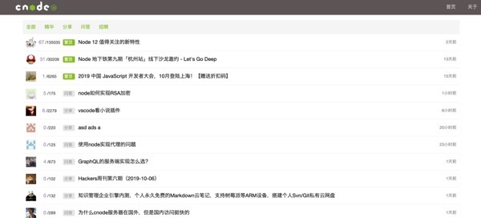
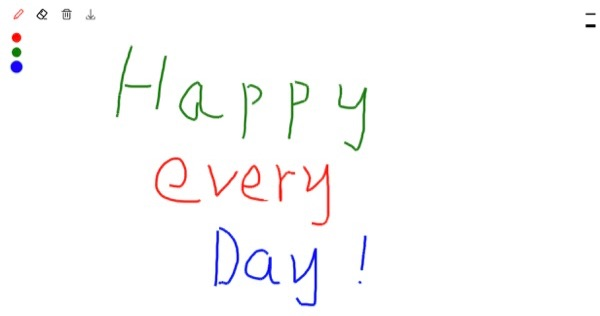

作品集
用Vue仿cnode社区
- 项目介绍:该项目使用 Vue 还原 CNode 官方社区，项目调用 CNode 官方社区提供的 API，以 Vue CLI 创建项目模版，使用 Axios 获取数据，使用 Vue Router 进行前端路由的切换及传参，使用 watch 监听路由的变化，Webpack 打包。
- 预览链接: https://dongdong-1019.github.io/vue-cnode-demo/dist/index.html#/
- 源码链接: https://github.com/dongdong-1019/vue-cnode-demo
用CSS画一只哆啦A梦
- 项目介绍:是一个使用纯原生 JS 开发的，动态显示 CSS 画一个皮卡丘过程的小作品。该作品主要思路是通过间隔计时器遍历预先设置在 preview 标签内代码，将其一个个显示在页面上，并在 style 标签上作同样处理，以使代码 CSS 生效。
- 预览链接: https://dongdong-1019.github.io/CSS-JS-DuoaDream/
- 源码链接: https://github.com/dongdong-1019/CSS-JS-DuoaDream
小小画板
- 项目介绍:是一个使用纯原生 JS 开发的，主要利用 HTML 5 的 Canvas API ，是我在学习原生 JS 及 Canvas 过程中开发的小工具。 其提供在 PC 及手机端在线画画、橡皮擦、画笔调色、画作删除等功能，并支持画作下载。
- 预览链接: https://dongdong-1019.github.io/canvas-demo-2018/index.html
- 源码链接: https://github.com/dongdong-1019/canvas-demo-2018
导航
- 项目介绍:是使用原生JS开发我的第一个JS项目，主要是利用遍历一个对象快速生成kbd标签，通过监听键盘的按键，去打开指定的网站，通过编辑按钮可以修改按键指定的网站。
- 预览链接: https://dongdong-1019.github.io/nov-demo
- 源码链接: https://github.com/dongdong-1019/nov-demo
关于我
熟练 HTML、DIV + CSS 的页面布局>，能根据设计图像素级完成页面制作
熟悉 HTML 5 及语义化，了解 Canvas 动画制作，掌握 CSS 3 动画、过渡效果等常用技术
熟悉原生 JavaScript，会使用ES6+ 常用规范，了解 TypeScript，了解 jQuery 常用 API 及思想
熟悉 Vue 常用功能，理解如生命周期、组件、虚拟 DOM、数据响应式等概念，能够使用 Vue 全家桶开发项目
熟悉模块化、工程化开发流程，能够配置 Webpack
有移动端开发经验，会使用REM、vw/ vh、响应式 等技术制作适配手机设备的页面
了解 HTTP 相关知识，了解常见的Web 性能优化 方案
了解 Node.js，能够开发简单的后台服务器
熟练使用 VsCode、WebStorm、Sass、Git 等开发工具